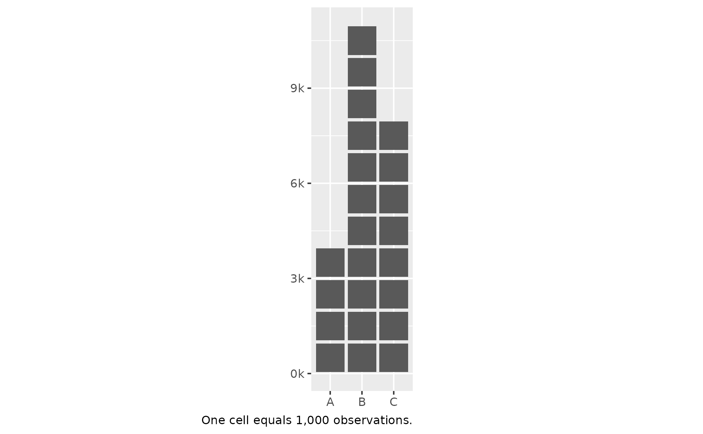
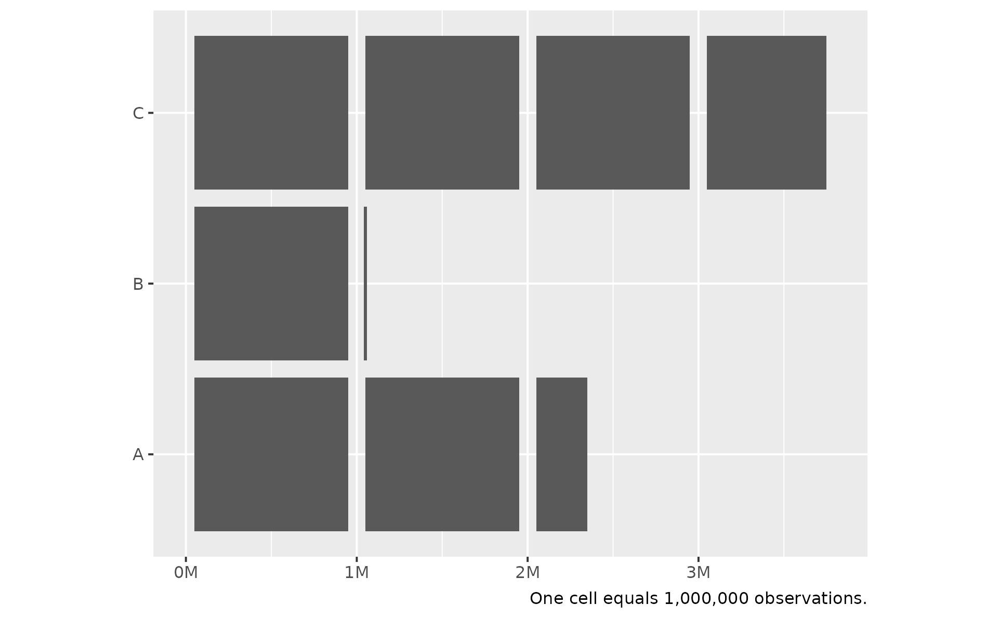

A thin wrapper around scales::label_number() anchored to a
cell_size: divides each axis break by cell_size and formats the
result. Use with scale_*_continuous(labels = ...) when the
corresponding geom_unit_*() layer was given a non-default
cell_size and you want the axis to read in cell counts (or in a
natural-unit scale like thousands / millions, via suffix).
Because label_cells() is a wrapper, every option that
scales::label_number() accepts (accuracy, big.mark,
decimal.mark, scale_cut, style_positive, ...) is available via
....
Arguments
- cell_size
The same
cell_sizevalue passed togeom_unit_bar()/geom_unit_col()/geom_unit_histogram(). Must be a positive finite scalar. Translated internally toscale = 1 / cell_size.- prefix, suffix
Character strings to wrap each label. Default
""(no decoration). Useful whencell_sizematches a natural unit – e.g.cell_size = 1e3withsuffix = "k"produces"1k","2k", ...;cell_size = 1e6withsuffix = "M"produces"1M","3M", ...- ...
Other arguments forwarded to
scales::label_number()– e.g.accuracy = 0.1,big.mark = ",",scale_cut = scales::cut_short_scale()(auto SI prefix).
Value
A function suitable for the labels argument of
ggplot2::scale_y_continuous() / ggplot2::scale_x_continuous().
See also
scales::label_number() for the underlying formatter and the
full list of forwardable options; geom_unit_bar() for the geoms
that consume cell_size.
Examples
library(ggplot2)
# cell_size = 1,000 -> axis reads "1k", "2k", ... (one cell = 1,000)
df_k <- data.frame(x = c("A", "B", "C"), y = c(4000, 11000, 8000))
ggplot(df_k, aes(x, y)) +
geom_unit_col(cell_size = 1e3) +
scale_y_continuous(labels = label_cells(1e3, suffix = "k")) +
labs(
x = NULL,
y = NULL,
caption = "One cell equals 1,000 observations.") +
coord_equal(ratio = 1 / 1e3)

# cell_size = 1,000,000 -> axis reads "1M", "3M", ... (one cell = 1,000,000)
# Flipped orientation: bars run along x, baselines on y.
df_M <- data.frame(x = c("A", "B", "C"), y = c(2.4e6, 1.1e6, 3.8e6))
ggplot(df_M, aes(y = x, x = y)) +
geom_unit_col(cell_size = 1e6) +
scale_x_continuous(labels = label_cells(1e6, suffix = "M")) +
labs(
x = NULL,
y = NULL,
caption = "One cell equals 1,000,000 observations.") +
coord_equal(ratio = 1e6)
